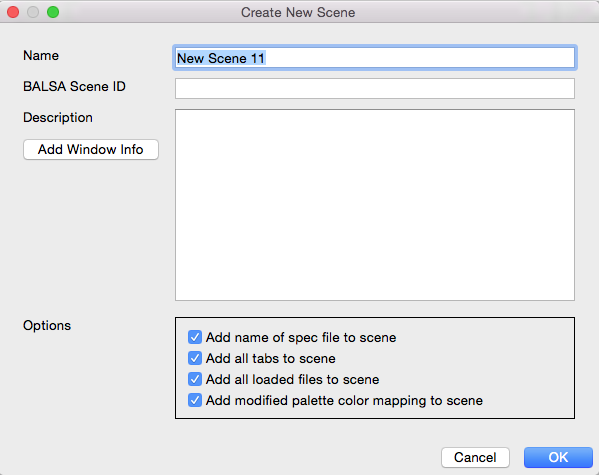

Create New Scene File
To create a new Scene File, open
the Scenes Window
by clicking the  button in the top right corner of the Workbench
Window.
button in the top right corner of the Workbench
Window.
- Click the New... button.
Set the Scene File name and location (default location is the
directory where wb_view was launched).
- To add to an existing Scene File, select
the desired file from the Scene File selection pull-down. If
the desired file is not an option here, load the file using
File>Open File... and it should appear.
- Once one has set up the display of data
as desired, use the Add... button to add a scene. Enter
the Scene Name and any additional Description
to the basic information added by default about what is being
displayed in the Active
Tab.
- The BALSA Scene ID will be
provided by the BALSA Database when the Scene File is uploaded.
This feature is still in development at this time.
- Toggling off the Options at the
bottom may be particularly useful when many files are loaded,
but only a few are displayed, or if one wants to create a
scene that displays only the Active Tab, for clarity.
- Click OK. The new scene will be
added to the list of scenes in the Scenes Window, along with a
thumbnail image of the scene's Active Tab.
